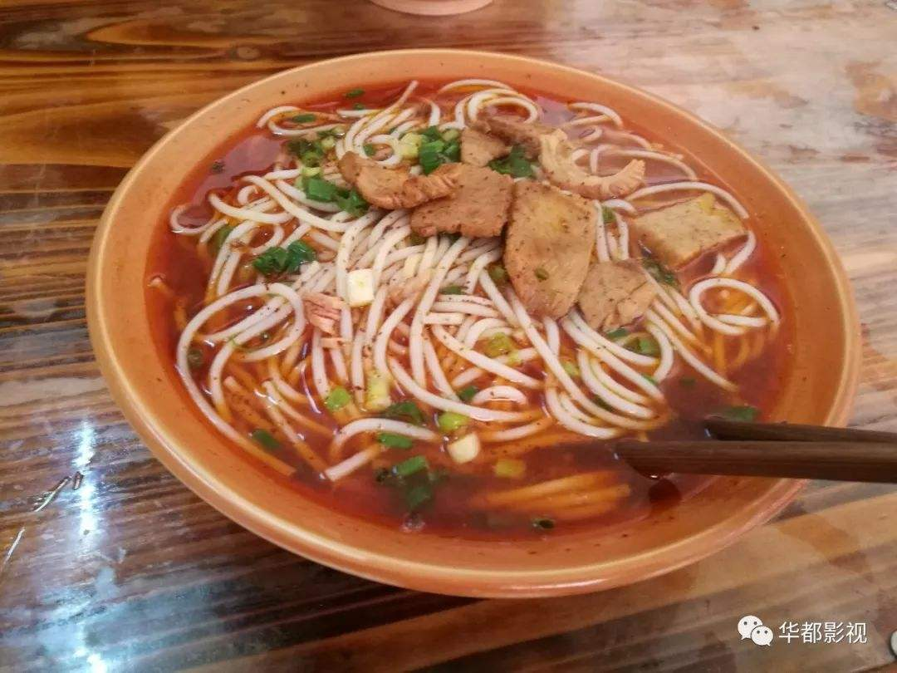
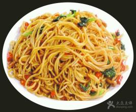
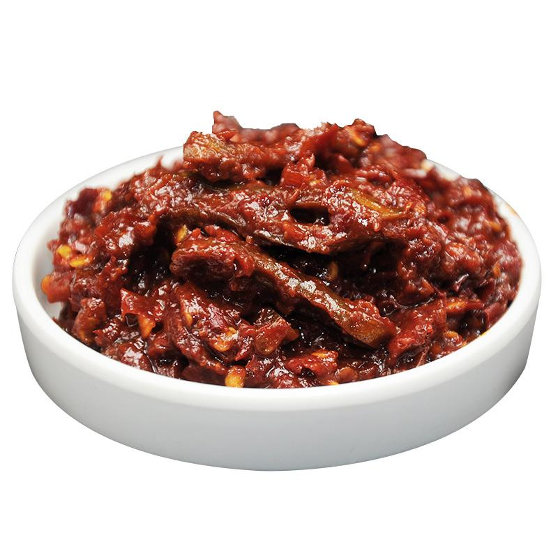

本店出品，必属精品
1.青树坪米粉

良心价：7元
青树坪米粉也颇为独特。米粉作为经典米制品之一，大多具有柔、绵、粘、糯等特点，口感较软;而青树坪米粉相比于普通米粉，口感韧劲更足，粉条本身更具有弹性。它粉条纤细而质地紧密、
韧性十足，吃起来分外爽口。轻轻一吸，顺滑的米粉便涌入你的口腔，牙齿微微一抿米粉便齐齐断开，Q弹的米粉在口腔内翻滚、拉扯，颇有异趣。
质地优异的米粉需要优异“配角”的衬托才能更加出彩，但一碗合格的青树坪米粉除了本地的米粉条外，浓郁鲜香的汤头、辣而不燥的辣椒油、酥香紧致的肉片。才构成一碗色香味俱全的青树坪米粉。
2.特色炒米粉

良心价：6块
经典的炒粉是加个鸡蛋，再放些时令配菜，这个配菜大多是豆芽（一年四季），空心菜（夏季），生菜（春，秋，冬季）。
无论是早餐或者宵夜这炒粉都是非常大众的选择，最主要是美味，价格实惠。加上由青树坪特制的米粉后，炒出来的米粉更加筋道，入味。
3.永丰辣酱

良心价：10块一瓶
永丰辣酱，湖南省双峰县特产，中国国家地理标志产品。
永丰辣酱既是一种调味品，又是一种风味小吃，具有独特的风味和丰富的营养成份。永丰辣酱作为低脂肪、低糖份、无化学色素、无公害的纯天然制品，不仅口感好、食用方便，可作各种食物的调色调味佐料，
而且开胃健脾，增进食欲，却寒被祛湿，防治感冒。其中的蒜仁、地蚕、蕨根等配料，还具有杀菌抗病等药用保健作用。因而，永丰辣酱越来越受到广大消费者的喜爱。
更多精品，欢迎来店品尝！